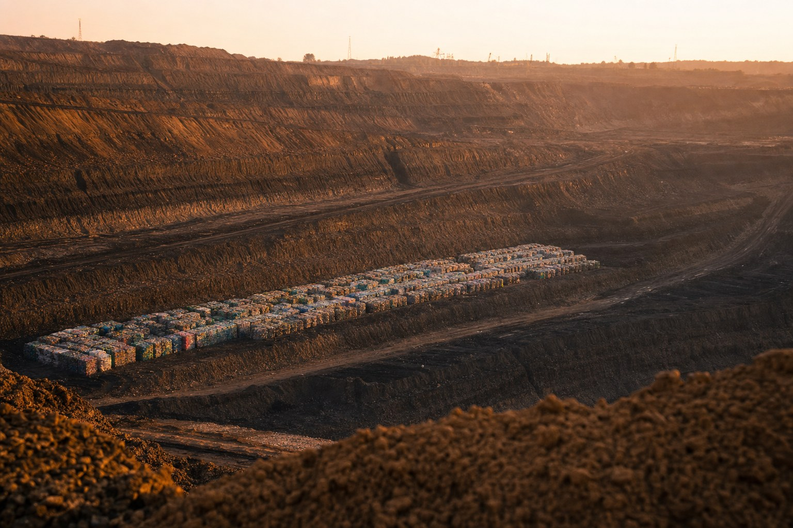

La multa del plástico que debería haber sido un carbon credit
Por qué los Países Bajos transfieren 235 millones de euros a Bruselas por algo por lo que deberían recibir 99 millones de euros — y qué debe hacer ese flujo de dinero.
Por Jacobus van Merksteijn · Malta, julio de 2026

Los Países Bajos pagaron en 2024 235 millones de euros a la Unión Europea como recurso propio del plástico — un gravamen de 0,80 € por kilogramo de residuos de envases plásticos no reciclados, introducido en 2021 como cuarto recurso propio del presupuesto de la UE. El volumen subyacente: aproximadamente 294.000 toneladas de envases de plástico que no entran en el flujo de reciclaje. Por ese volumen, los Países Bajos reciben una sanción fiscal.
El mundo al revés del gravamen europeo del plástico
La sanción se basa en la suposición de que el plástico no reciclado es, por definición, un problema medioambiental. Esa suposición es correcta mientras el plástico se incinere, lo que en los Países Bajos ocurre actualmente con unas 500 kilotoneladas de plástico al año en plantas de incineración de residuos. La incineración convierte el 78 por ciento del carbono contenido en el plástico directamente en CO₂ atmosférico: 2,64 kg de CO₂ por kg de plástico, según los cálculos estandarizados de ACV de CE Delft (2021).
Para los Países Bajos esto supone aproximadamente 1,32 megatoneladas de CO₂ fósil al año procedentes únicamente de la fracción de plástico de la incineración de residuos — una cifra que encaja dentro de las emisiones más amplias de las plantas de incineración, de 7,2 Mt de CO₂, de las cuales 2,7 Mt son de origen fósil, como confirma la Visión de política sobre incineración de residuos 2030 del gobierno neerlandés.
Pero aquí surge el problema: el gravamen no castiga la incineración. Castiga el "no reciclar". Y con ello, la UE se enreda en un error de razonamiento fundamental, porque existe una tercera opción que el gravamen no reconoce — una opción que, desde el punto de vista climático, es superior tanto al reciclaje como a la incineración.
La doctrina de incineración que la propia UE contradice
Como se explicó anteriormente en El Mapa de Consecuencias de Bruselas — versión BiCRS, Europa incinera anualmente unos 25 millones de toneladas de residuos plásticos en plantas de incineración. Esto genera 2,86 kg de CO₂ por kilogramo de plástico — en conjunto 71,5 megatoneladas de CO₂ al año, lo que equivale a aproximadamente el 2,4 por ciento del total de emisiones de la UE.
A modo de comparación: la misma cantidad de energía térmica, generada a partir de gas natural en una instalación de cogeneración moderna, produciría aproximadamente un tercio de esas emisiones de CO₂. La incineración de plástico es, por kilovatio-hora suministrado, unas 3,7 veces más dañina para el clima que la combustión de gas natural para la misma energía. Esto no es una cuestión de contenido energético — el plástico tiene, de hecho, un alto poder calorífico. Es una cuestión de densidad de carbono: el plástico fósil contiene más carbono por julio que el gas.
La consecuencia: los Países Bajos han construido en las últimas décadas una infraestructura de incineración que es crítica para la calefacción urbana y la electricidad, pero que produce estructuralmente más CO₂ que las instalaciones de gas a las que sustituye. Y por esas emisiones pagamos desde 2021 dos veces: una vez mediante el gravamen nacional de CO₂ y el ETS de la UE para las incineradoras (obligatorio desde 2024), y otra vez mediante el gravamen del recurso propio del plástico a Bruselas.
Lo que el plástico realmente es: un almacenamiento de carbono en superficie
En una escala de quinientos a cinco mil años, el plástico sin exposición a los rayos UV es no degradable. Las películas de polietileno de los años cincuenta encontradas en el suelo siguen estructuralmente intactas. Las cadenas poliméricas solo se rompen bajo la influencia de fotones (UV), radicales de oxígeno o procesos enzimáticos que, a temperatura ambiente y sin catálisis, requieren cientos de generaciones.
Eso convierte al plástico, en un entorno sin UV y químicamente inerte —por ejemplo, a doscientos metros de profundidad en un pozo de lignito cerrado— en una de las formas de almacenamiento de carbono más estables que conoce el ser humano. Más estable que el biochar (que se descompone lentamente), comparable al carbón y al gas (que son geológicamente estables durante cientos de millones de años), y con una ventaja crucial: no existe tentación económica de volver a extraerlo. ¿Quién querría recuperar lo que conscientemente hemos aislado?
La UE ha reconocido este principio en su propio Marco de Certificación de Eliminaciones de Carbono (CRCF), que desde 2024 certifica la eliminación permanente de carbono (>1.000 años) como carbon credit negociable. El Bio-CCS, el almacenamiento DAC y el biochar figuran explícitamente en el marco. El plástico estructuralmente estable en almacenamiento geológico, no.
Eso no es una cuestión física. Es una cuestión política.
El cálculo para los Países Bajos
Si la UE aplicara su propia lógica del CRCF de forma consistente a la fracción de plástico que hoy desaparece en las incineradoras neerlandesas, la cuenta sería la siguiente:
| Partida | Situación actual | Alternativa (almacenamiento) |
|---|---|---|
| Contribución de plástico a Bruselas | −235 M€ | 0 € |
| Gravamen ETS sobre 1,32 Mt de CO₂ fósil de incineradoras | −99 M€ | 0 € |
| Carbon credits por almacenamiento (1,32 Mt × 75 €/t) | 0 € | +99 M€ |
| Posición neta de los Países Bajos | −334 M€ | +99 M€ |
Inversión fiscal: 433 millones de euros al año. De pagador neto, los Países Bajos pasarían a ser productor neto de resultados climáticos — para el mismo flujo de plástico, solo que con un destino final distinto.
Con los precios ETS previstos para 2030 (100-130 € por tonelada de CO₂ según la Evaluación de Impacto de la Comisión Europea 2024), la inversión asciende hasta 500-600 millones de euros al año.
A nivel de la UE-27, con los 25 megatoneladas de plástico que desaparecen anualmente en incineradoras: 5.400 millones de euros al año en valor potencial de carbon credits, frente a los ingresos actuales del gravamen del plástico de unos 6.400 millones de euros. Con dos tercios de esa cantidad, la UE podría eliminar por completo su incentivo perverso sobre el plástico.
Lo que debe hacer el dinero: polímeros biobasados que no se degradan
El flujo de dinero invertido debe servir a un único objetivo: el desarrollo y la ampliación de mercado de polímeros permanentes de base biológica.
Esta es una dirección esencialmente distinta de la política habitual, que apuesta por bioplásticos compostables (PLA, PHA, derivados de almidón) — polímeros que sí se degradan, devolviendo así su carbono almacenado a la atmósfera en cuestión de años a décadas. Para el almacenamiento de carbono, la compostabilidad es un defecto, no una característica.
Se trata de tres categorías:
1. Bio-PE, bio-PP, bio-PET — químicamente idénticos a sus equivalentes fósiles, pero con carbono procedente de CO₂ atmosférico a través de biomasa (caña de azúcar, maíz, gramíneas C4). Braskem ya produce bio-PE comercialmente en Brasil. El precio actual es de 2.500-3.500 € por tonelada frente a 1.200 € para el PE fósil.
2. PEF (polietilén-furanoato) — el sucesor 100 % biobased del PET, pilotado por Avantium en Delfzijl, con propiedades de barrera superiores. El sobreprecio actual es de un factor 2-3 respecto al PET fósil.
3. Nuevas clases: bio-nylons, PU de base biológica, y la tercera generación en la que la ruta de azúcar a monómero ya no pasa por fermentación sino por conversión catalítica directa.
Con los 334 millones de euros anuales liberados, se podría cubrir el sobreprecio (1.500 €/tonelada) en aproximadamente 223.000 toneladas de sustitución biobased — más de tres cuartas partes del volumen actual neerlandés de envases no reciclados. Con las economías de escala europeas, la paridad de precio con los polímeros fósiles sería alcanzable en diez años.
Y, de manera crucial: cada tonelada de polímero biobased que se almacena permanentemente elimina 2,86 toneladas de CO₂ atmosférico de forma definitiva. Toda la cadena de Carbon-Alert que Het Open Vizier describió anteriormente —biomasa ecuatorial a través de gramíneas C4 hacia etanol y polímeros— se cierra en este modelo: el carbono se extrae del aire, atraviesa un ciclo de uso productivo y termina en almacenamiento geológico en antiguas minas de lignito.
La infraestructura de almacenamiento que Europa de todos modos debe desmantelar
Las minas de lignito alemanas de Hambach, Garzweiler e Inden —en conjunto más de 23.000 millones de metros cúbicos de volumen vacío tras su cierre previsto hacia 2038— son la ubicación de almacenamiento más evidente. Se encuentran en un país que de todos modos ya planea decenas de miles de millones en recuperación postminera, son lo suficientemente profundas (>100 m) para garantizar la ausencia de UV, y cuentan con infraestructura de transporte y seguridad ya existente.
Para dar una idea de la escala: la emisión anual neerlandesa total de plástico, de unos 300.000 metros cúbicos, cabría en una diezmilésima parte solo de la mina de Hambach. Para el conjunto de las emisiones de la UE de 25 millones de toneladas al año, eso es una treintava parte. Una sola mina de lignito puede albergar más de un siglo de producción europea de plástico.
Las alternativas —minas de sal polacas, yacimientos de gas neerlandeses agotados, minas de carbón británicas— son comparables en escala y ya se han considerado para el almacenamiento de CO₂ bajo la Directiva CCUS 2024. Para el almacenamiento de plástico, los requisitos son de hecho más sencillos: no hay recipientes a presión, no hay monitorización de fugas de gas, no hay riesgo de acidificación del agua subterránea. El plástico sólido e inerte simplemente permanece allí.
Tres propuestas de política
Uno — ampliación del CRCF para el almacenamiento de plástico
Los Países Bajos deben abogar en Bruselas por el reconocimiento explícito del plástico estructuralmente estable (fósil y biobased) en almacenamiento geológico como eliminación de carbono certificada bajo el CRCF. Los criterios técnicos están disponibles; es un paso político.
Dos — diferenciación del gravamen del plástico
El gravamen actual de 0,80 €/kg castiga por igual todo el plástico no reciclado. Reestructuración: el plástico incinerado mantiene el gravamen (o lo aumenta); el plástico depositado en almacenamiento permanente certificado obtiene exención del gravamen y un carbon credit. Esto es fiscalmente neutro para el presupuesto de Bruselas, pero invierte el incentivo.
Tres — fondo nacional de polímeros biobased
Los fondos liberados (235 M€ de contribución + 99 M€ de ETS evitado = 334 M€/año como mínimo) se destinan a tres fines: compensación de precio para polímeros permanentes biobased en envases de productos, I+D en conversión catalítica directa (de biomasa a monómero sin fermentación), y construcción de instalaciones certificadas de almacenamiento geológico de plástico.
La lógica más profunda
El régimen actual del gravamen del plástico es un ejemplo clásico de política que ataca los síntomas en lugar de los sistemas. El plástico no es intrínsecamente malo; incinerar plástico es malo. Verter plástico en un vertedero abierto es malo. Pero el plástico en sí —como estructura molecular— es exactamente lo que se quiere tener si se pretende extraer carbono de la atmósfera y hacer algo útil con él antes de guardarlo.
El marco de la UE no hace esa distinción. Trata "plástico en la chimenea de una incineradora" y "plástico en almacenamiento geológico" de forma idéntica. Eso no es descuido, es una decisión política de una época en la que el lobby del reciclaje era más dominante que el lobby climático. Ahora que la urgencia de la eliminación directa de carbono es un objetivo oficial de la UE (menos 55 por ciento neto en 2030, neutralidad climática en 2050), esa decisión ya no es defendible.
Los Países Bajos tienen la infraestructura (el puerto de Róterdam para la logística), la industria (Chemelot, Delfzijl, Sittard-Geleen), el conocimiento (Avantium, DSM, TNO) y la necesidad (los objetivos climáticos de 2030, inalcanzables sin eliminación directa de CO₂) para adelantarse en esta dirección. El giro fiscal de 334 millones de euros al año no es pequeño, pero tampoco es enorme — es exactamente suficiente para financiar una transformación industrial sin presión fiscal adicional.
Solo falta una cosa: el reconocimiento de que hoy pagamos 235 millones de euros por algo por lo que deberíamos recibir un pago. Y el valor de decirlo en Bruselas.

Jacobus van Merksteijn
Malta
Editor de Het Open Vizier. Pensador de sistemas sobre clima, energía y democracia.